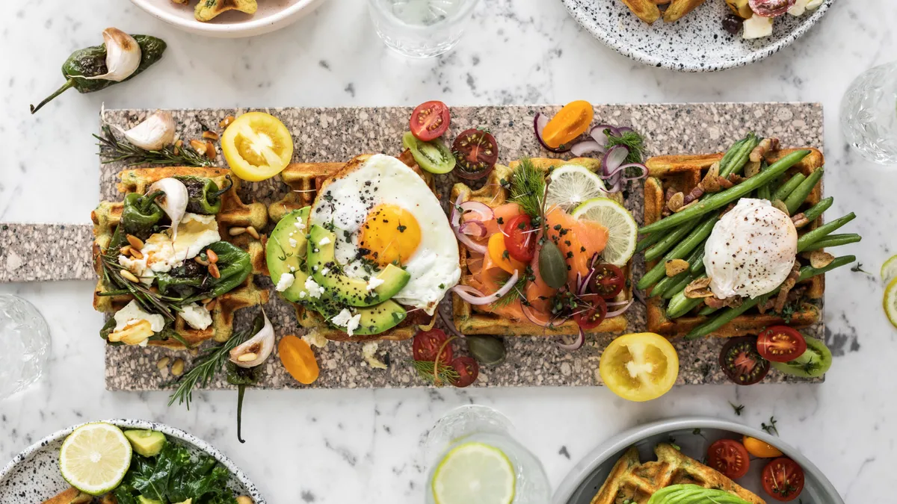
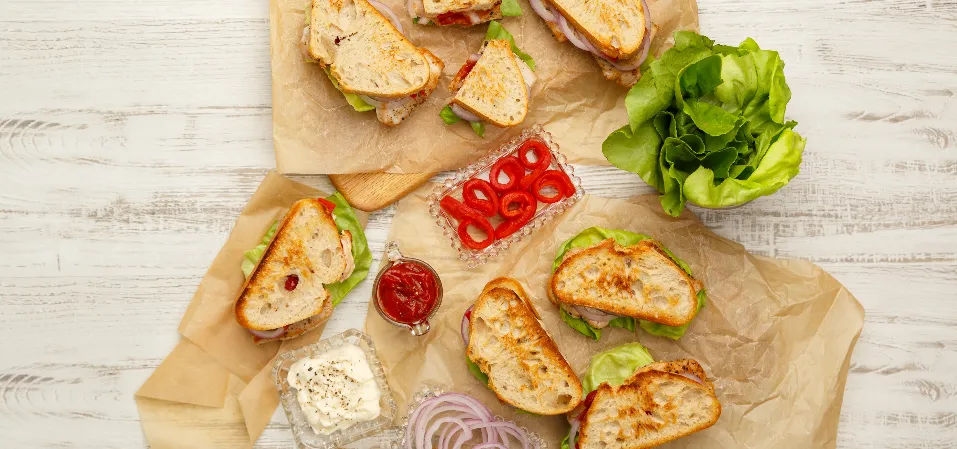
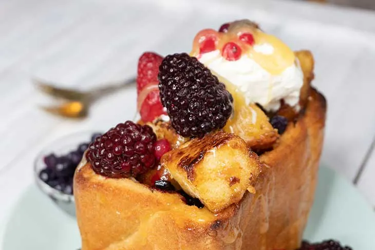

Vafe sarate, dar sanatoase si pline de proteine pentru cei pofticiosi
Click aici pt reteta si ingrediente
Un fel principal gustos si rapid, potrivit pentru persoane "on the go"
Click aici pt reteta si ingrediente
iata si un desert acum: una dintre cele mai usoare si delicioase retete de desert pe care le-am incercat vreodata. Este o reteta japoneza extrem de populara si gustoasa!
